문서 및 사용자 가이드
DataSynth Pro 공식 문서에 오신 것을 환영합니다. 이 종합 매뉴얼은 다양한 통계 모듈의 매개변수를 설정하여 완전 오프라인에서 견고하고 학술적으로 활용 가능하며 통계적으로 유효한 데이터셋을 합성하는 방법을 자세히 안내합니다.
1. 여러 지표 동시 생성
1.1 사전 요구 사항 및 실행
실행 파일을 두 번 클릭하여 애플리케이션을 시작합니다. 이 소프트웨어는 Microsoft .NET 8.0 Runtime Framework가 필요합니다. 컴퓨터에 설치되어 있지 않다면 안내에 따라 다운로드 및 설치한 뒤 프로그램을 다시 여세요.
보안 안내: 바이러스 백신 소프트웨어가 실행 파일을 오탐지하는 경우, 원활한 사용을 위해 로컬 예외 목록 또는 화이트리스트에 추가하세요.
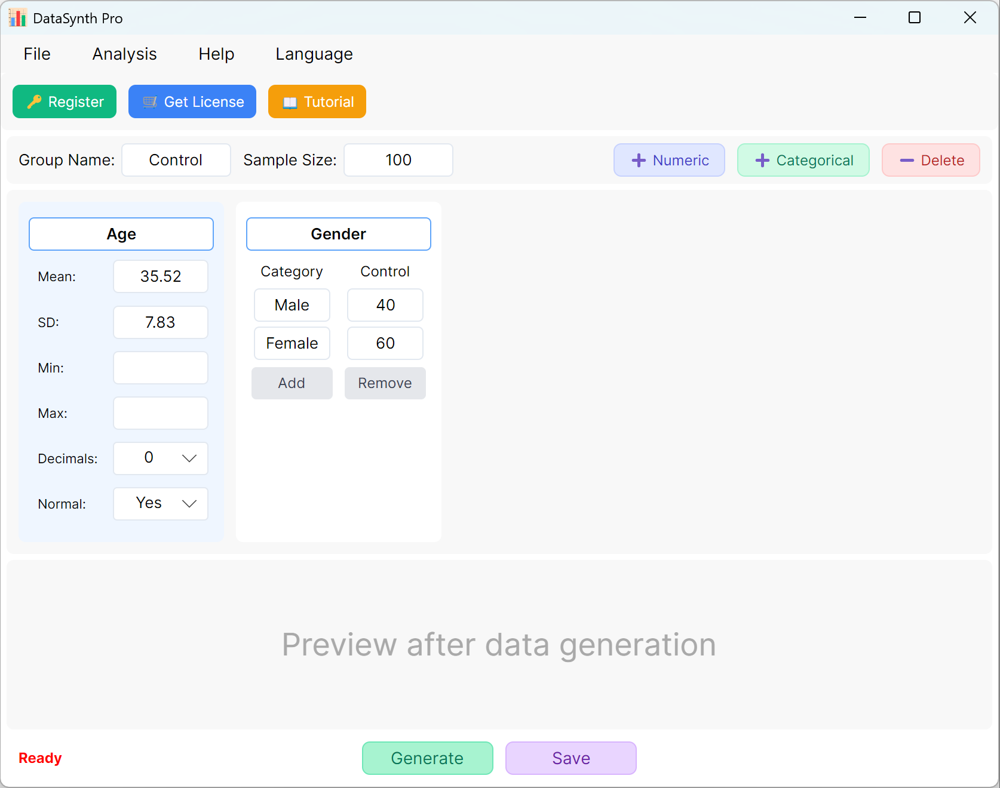
그림 1.1: 사용자 인터페이스 / 작업(기본 인터페이스)
1.2 매개변수 설정
기본적으로 애플리케이션은 빠른 참고용으로 두 개의 연속형 변수인 'Age'와 'Gender'를 미리 채웁니다. 그룹 지정은 기본적으로 'Control Group'이며 표본 크기는 100건으로 설정됩니다. 연구에 여러 그룹이 필요한 경우 각 실행의 매개변수를 업데이트하여 각 그룹의 데이터셋을 순차적으로 생성하고 내보낼 수 있습니다.
- 연속형 수치 변수 추가: 새 정량 변수를 추가하려면 + 숫자형 버튼을 클릭합니다. 그런 다음 지표 이름(예: 'Body Mass Index' 또는 'BMI'), 평균, 표준편차, 소수 자릿수를 지정할 수 있습니다. 특정 값 제한이 없으면 최소값과 최대값 경계 필드는 비워 둘 수 있습니다.
- 데이터 분포 설정: 기본적으로 생성된 수치 지표는 정규분포를 따릅니다. 비정규분포 데이터가 필요하면 정규분포 옵션을 아니요.
분포 조정: 정규분포는 자연스러운 분산 범위에 의존합니다. 최소값과 최대값 경계를 너무 좁게 제한하면 정규곡선이 잘려 비정규분포 값이 생성될 수 있습니다. 이런 경우 경계를 넓히거나 최소/최대 제한을 완전히 제거해 보세요.
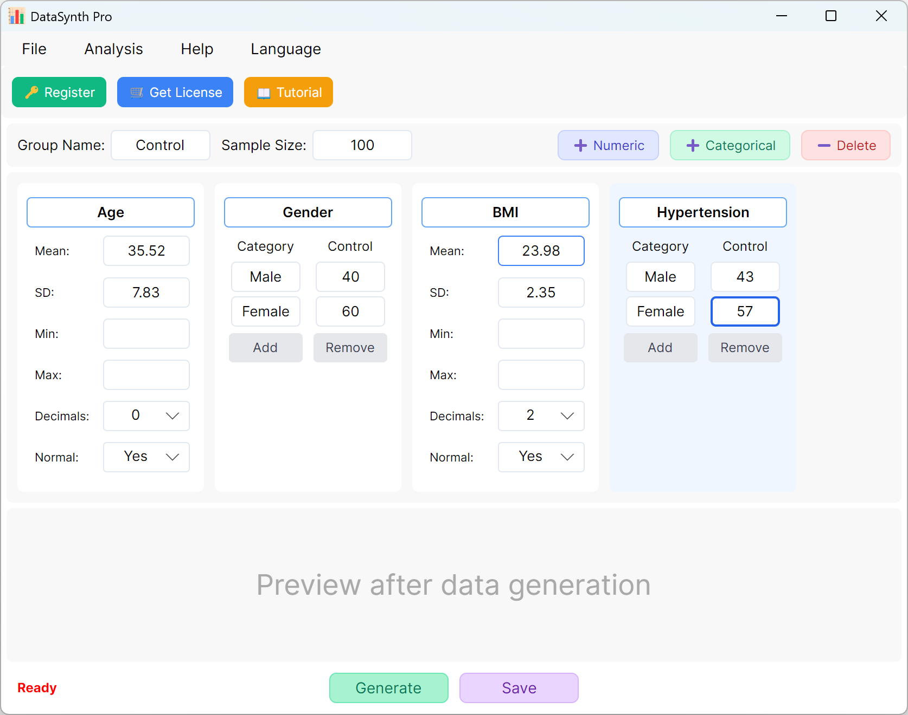
그림 1.2: 변수 추가를 위한 사용자 인터페이스 / 작업
1.3 범주형 변수 추가
다음 버튼을 클릭합니다: + 범주형 버튼을 클릭하여 질적 변수(예: 'Hypertension')를 계속 추가합니다. 범주 이름과 해당 목표 분포 또는 비율을 입력할 수 있습니다. 범주 비율의 합은 설정한 표본 크기에 맞게 동적으로 조정됩니다.
1.4 생성 실행
다음 버튼을 클릭합니다: 생성 버튼을 클릭하여 요청한 수의 레코드를 합성합니다. 계산이 완료되면 기술통계 요약 창이 나타나 실제 생성값이 설정한 매개변수와 일치하는지 확인할 수 있습니다.
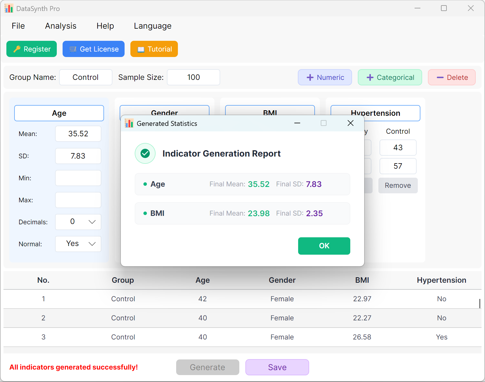
그림 1.3: 생성 실행을 위한 사용자 인터페이스 / 작업
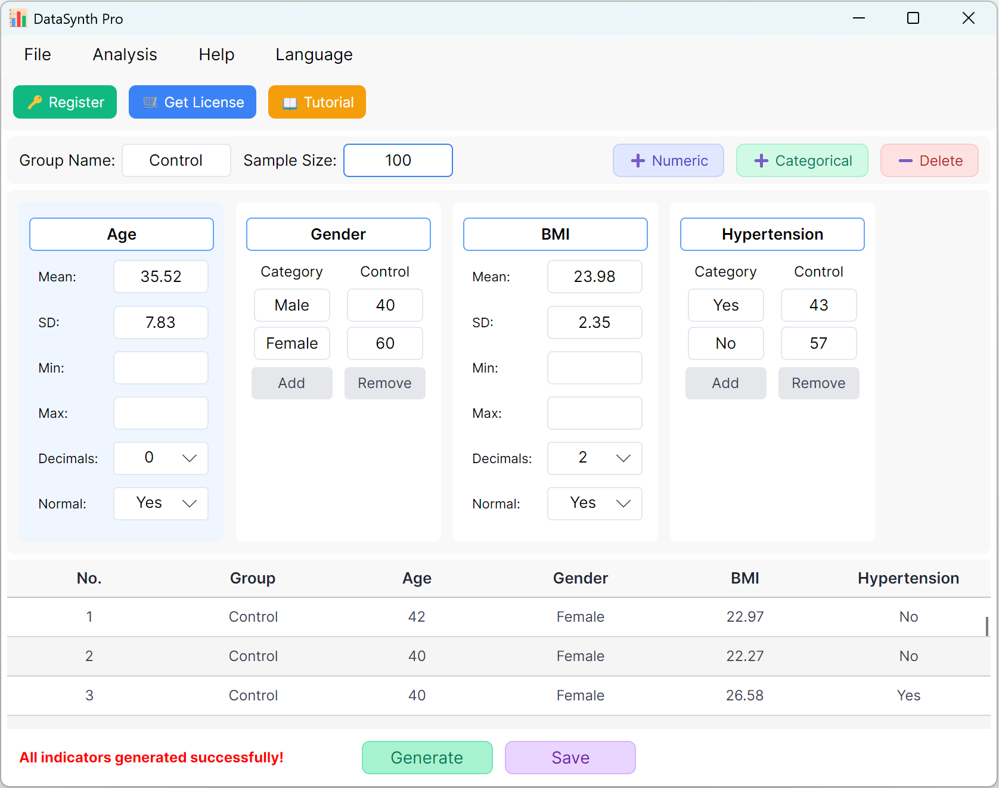
그림 1.4: 데이터 표시를 위한 사용자 인터페이스 / 작업
1.5 내보내기 및 검증
다음 버튼을 클릭합니다: 저장 버튼을 클릭하여 생성된 데이터셋을 표준 Excel 파일로 내보냅니다. 내보낸 스프레드시트를 열고 표준 Excel 수식으로 'Age'의 기술통계(소수 둘째 자리 반올림)를 계산하면 실제 평균과 표준편차가 초기 설정과 정확히 일치합니다.
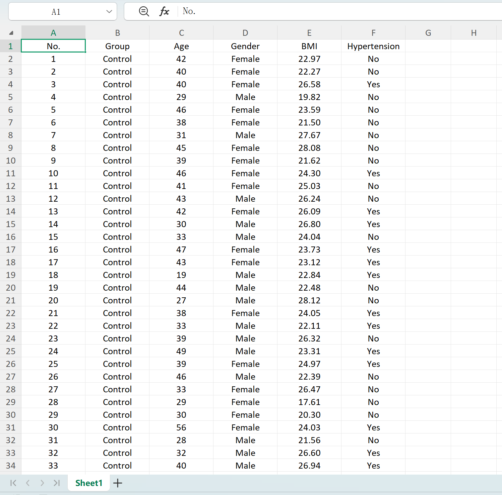
그림 1.5: 생성된 표를 Excel로 내보내기
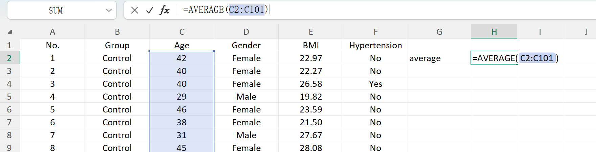
그림 1.6: 평균 계산을 위한 Excel 작업
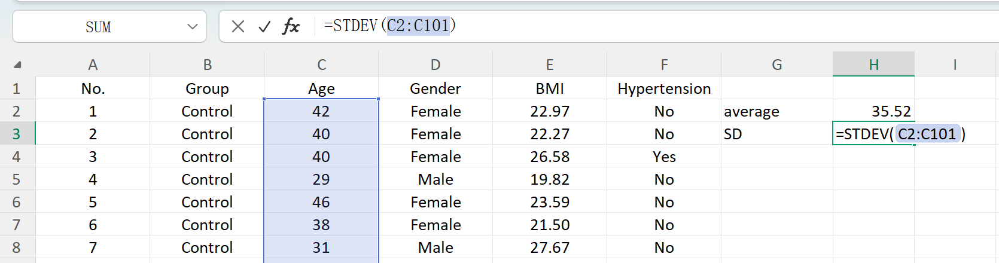
그림 1.7: 표준편차 계산을 위한 Excel 작업
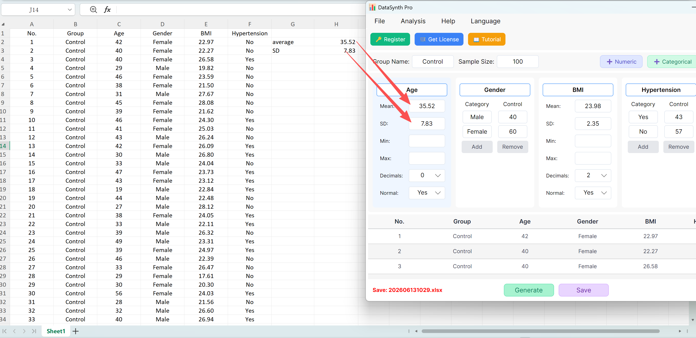
그림 1.8: 초기 설정과 동일한 검증 결과
1.6 계산 효율
고성능 최적화 엔진을 탑재하여 수천 또는 수만 건의 레코드가 포함된 데이터셋을 몇 초 안에 생성할 수 있습니다. 최대 반복 후에도 시스템이 수렴하지 않으면 설정의 통계적 타당성을 확인하거나 최소/최대 제한 없이 실행해 보세요. 이 프로그램은 전문 과학 연구 요구에 맞게 최대 소수 8자리 정밀도를 지원합니다.
팁 및 권장 사항:
• 정규분포 우선: 데이터는 원활한 후속 분석(예: 독립표본 t검정)을 위해 기본적으로 정규분포로 설정됩니다. 비모수 또는 사용자 지정 분포 데이터셋을 원하면 정규분포 설정을 아니요로 전환하세요.
2. 독립표본 t검정
서로 다른 두 그룹의 평균을 비교하는 횡단 연구를 위해 설계되었습니다. 임상시험(예: 치료군과 위약군 간 약효 비교)과 사회학 설문에서 널리 사용됩니다.
2.1 작업 흐름
다음으로 이동합니다: Analyze → Independent T-Test. 아래와 같이 설정 창이 나타납니다:

그림 2.1: 독립표본 T검정을 위한 사용자 인터페이스 / 작업
2.2 매개변수
프로그램은 참고용으로 'Control Group'과 'Experimental Group'의 표본 설정을 미리 채웁니다. 각 그룹의 표본 크기, 평균, 표준편차를 입력하면 계산된 t값과 p값을 실시간으로 미리 볼 수 있습니다. 최소값과 최대값 매개변수는 선택 사항입니다.
생성 버튼을 클릭하면 아래 미리보기 표에 두 그룹의 원시 데이터셋이 생성되며, 최종 t값과 p값은 실제 생성 데이터를 반영하도록 조정되고 등분산성에는 Levene 검정이 사용됩니다.

그림 2.2: 독립표본 T검정 데이터 표시를 위한 사용자 인터페이스 / 작업
3. 대응표본 t검정
동일한 대상자를 두 번 측정하는 종단 또는 교차 연구(예: 사전검사 vs 사후검사)에 사용됩니다. 대응 관측치 간 평균 차이를 합성하는 데 초점을 둡니다.
3.1 작업 흐름
다음으로 이동합니다: Analyze → Paired T-Test. 작업 영역 레이아웃은 아래와 같습니다:

그림 3.1: 대응표본 T검정을 위한 사용자 인터페이스 / 작업
3.2 시뮬레이션 로직
소프트웨어는 기본적으로 Paired Var1과 Paired Var2라는 두 개의 대응 변수를 제공합니다. 각 변수의 평균과 표준편차를 정의하고 전체 표본 크기와 대응표본 t검정의 목표 p값 범위를 설정할 수 있습니다. 엔진은 조건을 충족하는 데이터셋을 반복 계산합니다.
수렴 적응: 설정한 평균이 목표 p값과 수학적으로 일치하지 않는 경우(예: 두 평균이 크게 다른데 유의하지 않은 p > 0.05를 요청한 경우), 프로그램은 첫 번째 그룹의 매개변수를 고정하고 두 번째 그룹의 평균을 동적으로 조정하여 목표 p값을 달성합니다.

그림 3.2: 대응표본 T검정 데이터 표시를 위한 사용자 인터페이스 / 작업
4. 카이제곱 검정
두 범주형 변수 사이에 유의한 연관성이 있는지 판단합니다. 인구통계학적 교차표 분석에 널리 사용됩니다.
4.1 작업 흐름
다음으로 이동합니다: Analyze → Chi-Square Test. 설정 패널은 다음과 같이 열립니다:
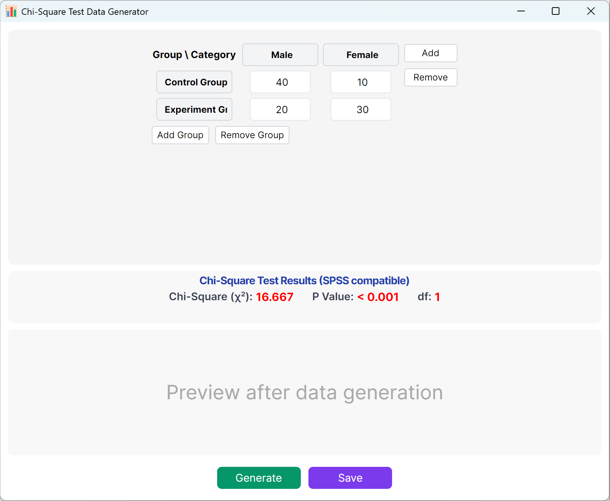
그림 4.1: 카이제곱 검정을 위한 사용자 인터페이스 / 작업
4.2 분할표 행렬
인터페이스는 카이제곱 계산을 위한 표준 2x2 분할표를 기본으로 제공하며, 그룹명과 범주명은 모두 편집할 수 있습니다. 각 셀의 관측 빈도(건수)를 입력하면 계산된 카이제곱값과 p값이 실시간으로 업데이트됩니다.
더 큰 모델에 맞게 그룹(행) 또는 범주(열)를 동적으로 추가할 수 있습니다. 생성 버튼을 클릭하여 해당 빈도와 일치하는 개별 원시 레코드를 생성하고, 저장 를 클릭하여 데이터셋을 Excel로 내보냅니다.
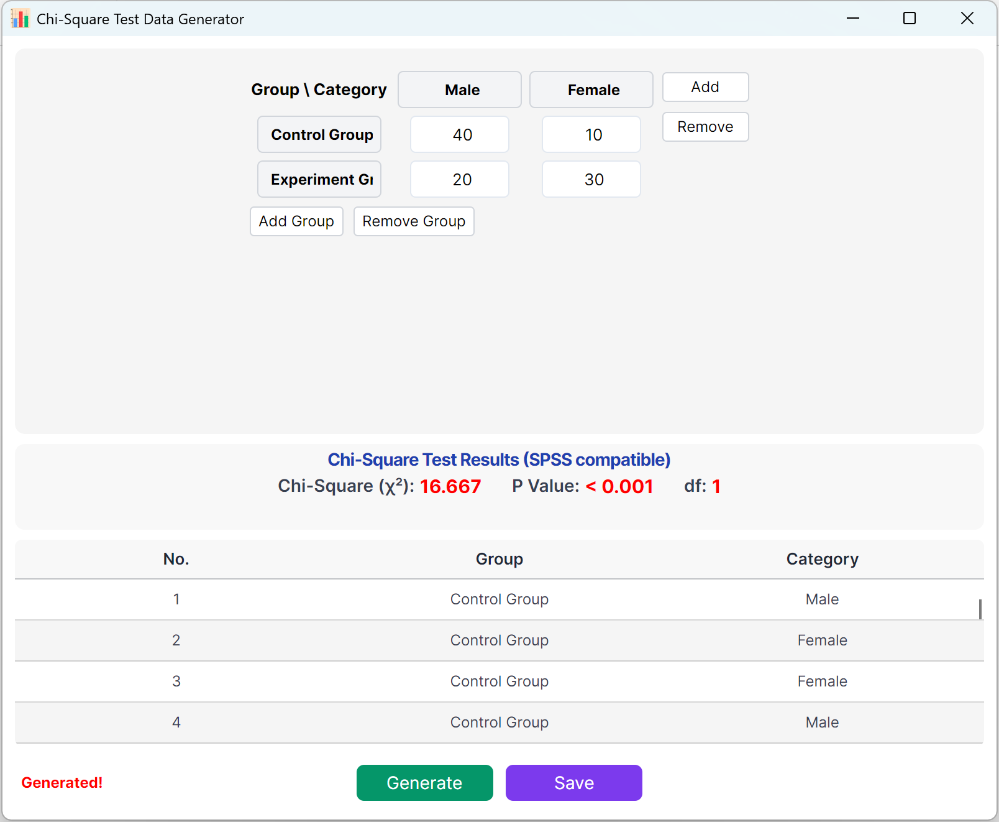
그림 4.2: 카이제곱 검정 데이터 표시를 위한 사용자 인터페이스 / 작업
5. 일원분산분석
세 개 이상의 독립 그룹 평균을 비교할 때 사용됩니다. 알고리즘은 목표 F값을 충족하도록 그룹 내 분산과 그룹 간 차이를 합성합니다.
5.1 작업 흐름
다음으로 이동합니다: Analyze → ANOVA → One-Way ANOVA. 작업 영역 레이아웃은 다음과 같습니다:

그림 5.1: 일원분산분석을 위한 사용자 인터페이스 / 작업
5.2 설정
시스템은 'Control Group', 'Experimental Group', 'Treatment Group' 세 그룹의 매개변수를 미리 불러옵니다. 각 그룹의 표본 크기, 평균, 표준편차를 입력하면 전체 F통계량, p값, Tukey HSD 사후 다중비교 결과를 즉시 미리 볼 수 있습니다.
클릭 생성 버튼을 클릭하여 아래에 개별 원시 레코드를 계산하고 미리 봅니다. 전체 F값과 p값은 실제 생성값을 반영하도록 자동으로 업데이트됩니다.

그림 5.2: 일원분산분석 데이터 표시를 위한 사용자 인터페이스 / 작업
6. 이원분산분석
두 개의 독립 범주형 변수가 하나의 연속형 종속 변수에 미치는 영향을 검토합니다. 주효과와 상호작용 효과를 평가하는 요인 설계에 필수적입니다.
6.1 작업 흐름
다음으로 이동합니다: Analyze → ANOVA → Two-Way ANOVA. 설정 패널은 아래와 같이 표시됩니다:

그림 6.1: 이원분산분석을 위한 사용자 인터페이스 / 작업
6.2 요인 및 상호작용
도구는 기본적으로 'Time'(2수준)과 'Concentration'(2수준)이라는 두 요인을 제공합니다. 그룹 추가 요인에 여러 분류가 있는 경우 더 많은 수준을 설정합니다.
각 셀의 표본 크기, 평균, 표준편차를 입력하면 Time의 주효과, Concentration의 주효과, 상호작용 효과(Time × Concentration)에 대한 F통계량과 p값을 미리 볼 수 있습니다. 생성 버튼을 클릭하여 미리보기 패널에 일치하는 개별 원시 레코드를 구성합니다.

그림 6.2: 이원분산분석 데이터 표시를 위한 사용자 인터페이스 / 작업
7. 일원 반복측정 분산분석
대응표본 T검정을 세 개 이상의 시점으로 확장한 방식입니다. 장기간 추적(예: 기준선, 1개월, 3개월)에 적합합니다.
7.1 작업 흐름
다음으로 이동합니다: Analyze → ANOVA → Repeated Measures ANOVA. 작업 영역 레이아웃은 아래와 같습니다:

그림 7.1: 일원 반복측정 분산분석을 위한 사용자 인터페이스 / 작업
7.2 반복 관측
시스템은 기본적으로 세 개의 관측 시점을 제공합니다. 시점 추가 버튼을 클릭해 쉽게 확장할 수 있습니다. 각 시점의 평균과 표준편차를 입력하고 목표 p값 범위를 정의하세요.
클릭 생성 버튼을 클릭하여 조건을 충족하는 값을 합성합니다.
엔진 압축: 시점 간 차이가 수학적으로 매우 커서 매우 유의한 p값을 의미하지만 목표 범위를 p > 0.05로 설정한 경우, 엔진은 정확한 목표 p값을 충족하도록 시점 간 분산과 평균 차이를 자동으로 압축합니다. 팝업 대화상자에는 합성 데이터셋의 실제 통계가 표시됩니다.

그림 7.2: 반복측정 분산분석 데이터 표시를 위한 사용자 인터페이스 / 작업
8. 독립 2표본 순위합 검정(비모수)
정규성 가정을 만족하지 않는 데이터에 대한 Mann-Whitney U 검정 대안입니다. 연속형 또는 순서형 변수의 순위 논리를 기반으로 중앙값 차이를 평가합니다.
8.1 작업 흐름
다음으로 이동합니다: Analyze → Non-parametric → 2 Independent Samples. 설정 작업 영역은 아래와 같습니다:
1.png)
그림 8.1: 독립 2표본 순위합 검정을 위한 사용자 인터페이스 / 작업
8.2 설정
프로그램은 기본적으로 두 개의 참고 그룹을 제공합니다. 비모수 방법은 비정규분포 데이터를 위해 설계되었으므로 정규분포 옵션은 아니요 로 기본 설정됩니다. Mann-Whitney U 검정을 사용해 목표 p값 범위를 정의할 수 있습니다. 생성 버튼을 클릭하여 이 임계값을 통계적으로 충족하는 원시 관측값을 합성합니다.
순위합 생성 로직: 비모수 검정은 모든 관측값을 합쳐 순위를 부여한 뒤 그룹 차이를 분석합니다. 따라서 두 그룹의 설정 매개변수가 크게 달라 자연스럽게 매우 작은 p값이 나오지만 목표 임계값을 p > 0.05로 설정한 경우, 엔진은 목표를 충족하도록 그룹 간 차이를 자동으로 줄입니다. 최종 계산된 평균과 표준편차는 팝업 대화상자에 표시됩니다.
2.png)
그림 8.2: 독립 2표본 순위합 검정 데이터 표시를 위한 사용자 인터페이스 / 작업
9. Kruskal-Wallis 검정(독립 K표본 비모수)
Kruskal-Wallis H 검정에 해당합니다. 세 개 이상의 독립 그룹에 대해 순서형 또는 비정규분포 연속 데이터를 생성합니다.
9.1 작업 흐름
다음으로 이동합니다: Analyze → Non-parametric → K Independent Samples. 설정 작업 영역은 아래와 같습니다:
1.png)
그림 9.1: Kruskal-Wallis 검정을 위한 사용자 인터페이스 / 작업
9.2 다중 그룹 순위화
프로그램은 기본적으로 세 개의 참고 그룹을 제공하며 Kruskal-Wallis 검정을 수행합니다. 두 그룹 검정과 마찬가지로 계산은 합쳐진 데이터셋의 순위를 기반으로 하므로, 설정한 다중 그룹 매개변수의 차이가 매우 커 매우 유의한 p값이 나오지만 목표를 p > 0.05로 요청한 경우 시뮬레이션 엔진은 그룹 간 차이를 자동으로 압축합니다. 결과 통계는 팝업 창에 요약됩니다.
2.png)
그림 9.2: Kruskal-Wallis 검정 데이터 표시를 위한 사용자 인터페이스 / 작업
10. 사분위수 데이터 생성
순위화된 데이터셋을 네 개의 동일한 부분으로 나눕니다. 데이터의 산포와 중심 경향을 평가하고 중앙값을 강조하며 이상치를 탐지하는 데 유용합니다.
10.1 작업 흐름
다음으로 이동합니다: Analyze → Quartile Data. 레이아웃은 아래에 표시되어 있습니다:
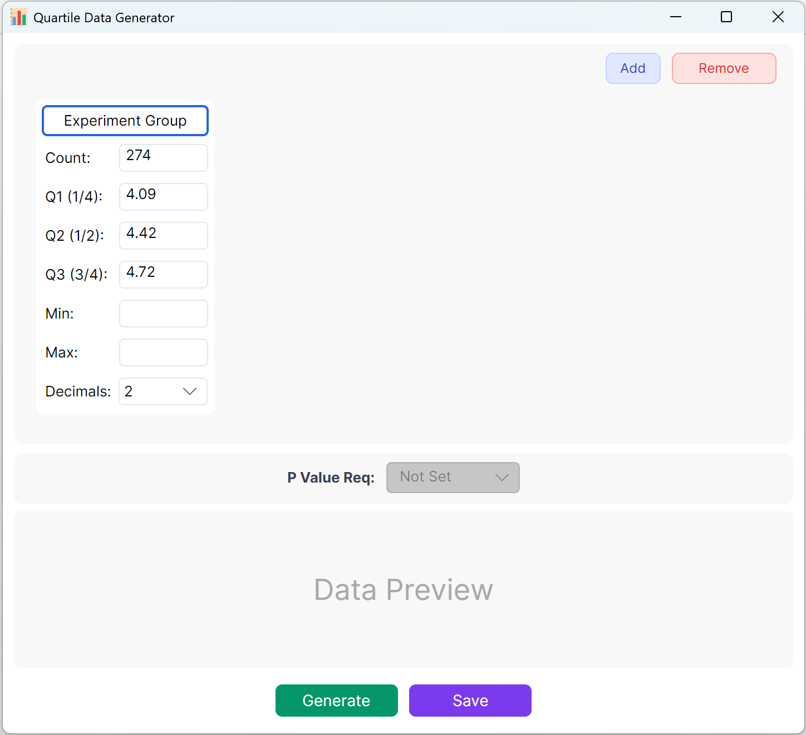
그림 10.1: 사분위수 데이터를 위한 사용자 인터페이스 / 작업
10.2 매개변수 정의
목표 표본 크기, Q1(25백분위수), Q2(중앙값/50백분위수), Q3(75백분위수)을 정의합니다. 특정 제약이 없으면 최소/최대 경계를 비워 둘 수 있습니다. 소수 자릿수를 선택하고 생성 버튼을 클릭하여 정확한 사분위수 경계를 충족하는 관측값을 생성합니다.
요약: Q1, Q2, Q3의 표본 크기와 목표값을 설정합니다. 선택 매개변수에는 최소값, 최대값, 소수 자릿수가 포함됩니다. 생성 버튼을 클릭하여 목표 사분위수 구조와 일치하는 원시 관측값을 계산하고 표시합니다. 다중 그룹 설정에서는 목표 그룹 간 p값 범위를 고정할 수도 있습니다.
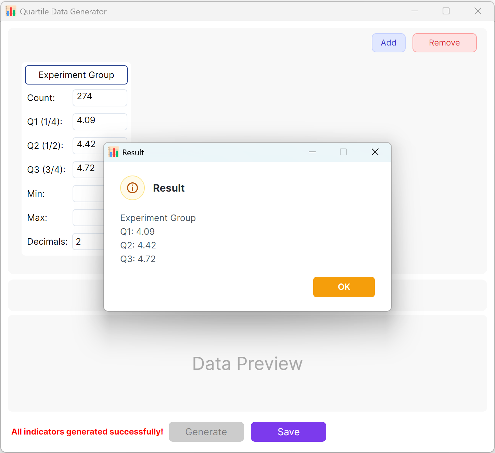
그림 10.2: 사분위수 데이터 표시를 위한 사용자 인터페이스 / 작업
11. 이항 로지스틱 회귀 데이터 생성
결과가 이분형(DV=0 또는 DV=1)인 분류 문제에 필수적입니다. 위험 요인 식별(예: 질병 vs 건강)과 같은 역학 연구에서 매우 널리 사용됩니다.
11.1 작업 흐름
다음으로 이동합니다: Analyze → Regression → Binary Logistic.

그림 11.1: 이항 로지스틱 회귀를 위한 사용자 인터페이스 / 작업
11.2 설계
기본적으로 두 개의 연속형 독립 변수가 참고용으로 설정됩니다. 이항 로지스틱 모델에서 종속 변수는 정확히 두 가지 결과(0과 1)를 갖습니다. 따라서 종속 변수는 0과 1 그룹으로 구성되며, 기본 표본 크기는 범주당 100건입니다(사용자 지정 가능).
- 변수 설정: 클릭 + 숫자형 를 클릭하여 연속형 독립 변수(예: 'Age', 'BMI')를 추가합니다. 변수명, 평균, 표준편차, 소수 자릿수, 목표 p값 범위(최종 로지스틱 회귀 모델에서 해당 변수가 달성하기를 원하는 목표 유의수준)를 입력합니다. 최소/최대 제약은 선택 사항입니다.
- 생성 및 검증: 클릭 생성 버튼을 클릭하여 합성 알고리즘을 실행합니다. 시스템은 로지스틱 회귀 모델의 p값이 설정과 일치하는 데이터셋을 반복적으로 계산합니다.
IBM SPSS 형식에 맞춘 상세 회귀 분석 보고서가 자동으로 표시됩니다. 보고서를 닫으면 미리보기 표에 원시 데이터셋이 표시되어 Excel로 내보낼 수 있습니다.

그림 11.2: 이항 로지스틱 회귀 데이터 표시를 위한 사용자 인터페이스 / 작업
12. 다중 선형 회귀 데이터 생성
핵심 예측 모델링 도구입니다. 여러 독립 변수(X)의 영향을 받는 연속형 종속 변수(Y)를 합성하며, 독립 변수는 연속형 수치, 사분위수, 순서형 범주, 명목형 범주가 될 수 있습니다.
12.1 작업 흐름
다음으로 이동합니다: Analyze → Regression → Linear Regression.

그림 12.1: 다중 선형 회귀를 위한 사용자 인터페이스 / 작업
12.2 모델 설정
인터페이스는 기본 표본 크기 200건과 함께 연속형 종속 변수('Blood Glucose Fluctuation') 및 두 개의 독립 변수('Total Cholesterol'은 수치형, 'Gender'는 범주형)를 미리 불러옵니다. 목표 결정계수(R²) 범위(예: 0.4~0.6)를 설정할 수 있습니다.
클릭 생성 버튼을 클릭하여 회귀 모델을 실행합니다. SPSS 출력과 일치하는 검증 보고서가 표시됩니다. 보고서를 닫으면 원시 데이터 미리보기 표로 돌아가며, 이를 Excel 스프레드시트로 저장할 수 있습니다.

그림 12.2: 다중 선형 회귀 데이터 표시를 위한 사용자 인터페이스 / 작업
13. Cox 비례위험 회귀 데이터 생성
생존 분석의 표준 방법입니다. 우측 검열을 고려하면서 사건 발생까지의 시간 데이터를 시뮬레이션하여 연구자가 공변량이 생존 시간에 미치는 영향을 평가할 수 있게 합니다.
13.1 작업 흐름 및 기술 지침
다음으로 이동합니다: Analyze → Regression → Cox Regression.

그림 13.1: Cox 비례위험 회귀를 위한 사용자 인터페이스 / 작업
- 전체 표본 크기(N): 전체 대상자/환자 수(예: 200명).
- 관측 사건(결과 사건): 추적 기간 중 최종 결과(예: 사망, 재발, 사건 실패)를 경험한 양성 사례의 수입니다. 참고: 사건 수는 전체 표본 크기보다 반드시 작아야 합니다.
- 생존 시간 범위(T): 생존 기간의 [최소 추적]부터 [최대 추적] 범위(예: 1~60개월)를 정의하고, 시간 단위를 일/월/년으로 지정하며, 수치 소수 정밀도를 설정합니다.
통계적 EPV 규칙(변수당 사건 수): Cox 비례위험 모델의 수학적 안정성과 신뢰성을 보장하려면 관측 결과 사건 수를 독립 변수 수로 나눈 비율(EPV)이 최소 10~20인 것이 강력히 권장됩니다. 모델이 수렴하지 않으면 전체 표본 크기 또는 관측 사건 수를 늘려 보세요.
13.2 연구 변수 구성
변수 카드 하단의 해당 버튼을 클릭하여 독립 공변량을 구성합니다:
- 연속형 수치 변수: 클릭 + 숫자형 를 클릭하여 연속형 공변량(예: Age, BMI, 임상 바이오마커)을 추가합니다. 평균, 표준편차(필수), 선택적으로 최소/최대 경계를 입력하여 이상치 범위와 소수 정밀도를 제한합니다.
- 범주형 변수: 클릭 + 범주형 를 클릭하여 명목형/순서형 공변량(예: Gender, Satisfaction Score)을 추가합니다. 각 범주의 정확한 목표 빈도를 입력합니다. 참고: 실행하려면 모든 범주의 건수 합이 전체 표본 크기와 반드시 같아야 합니다.
- 사분위수 변수: 클릭 + 사분위수 를 클릭하여 사분위수 구조 변수를 추가하고 Q1, Q2(중앙값), Q3 목표 매개변수를 입력합니다.
목표 매개변수: 각 변수 카드 하단에는 두 가지 강력한 목표 매개변수가 있습니다:
- 회귀 p값: 유의성 목표를 선택합니다(예: p > 0.05, p < 0.05, p < 0.01 또는 p < 0.001).
- 위험비(HR) 방향: HR > 1(위험 요인, 위험률 증가를 의미) 또는 HR < 1(보호 요인, 위험률 감소를 의미)을 선택합니다.
13.3 데이터 생성 실행 및 저장
모든 매개변수를 입력한 후 생성 창 하단의 버튼을 클릭합니다. 백엔드는 고도의 동시 반복 시뮬레이션을 실행합니다. IBM SPSS에서 계산한 정확한 통계와 스타일을 반영한 권위 있고 포괄적인 Cox 비례위험 회귀 분석 보고서가 자동으로 표시됩니다.
클릭 저장 버튼을 클릭하여 합성된 원시 데이터셋을 Excel 파일로 내보냅니다. 이 파일은 검증을 위해 SPSS 또는 기타 전문 통계 패키지로 쉽게 가져올 수 있습니다.

그림 13.2: Cox 비례위험 회귀 데이터 표시를 위한 사용자 인터페이스 / 작업
14. 상관분석용 데이터 생성
목표 상관계수(r값)와 유의수준을 적용하여 이변량 관계(Pearson 또는 Spearman)와 편상관을 시뮬레이션합니다.
14.1 작업 흐름
다음으로 이동합니다: Analyze → Correlation.
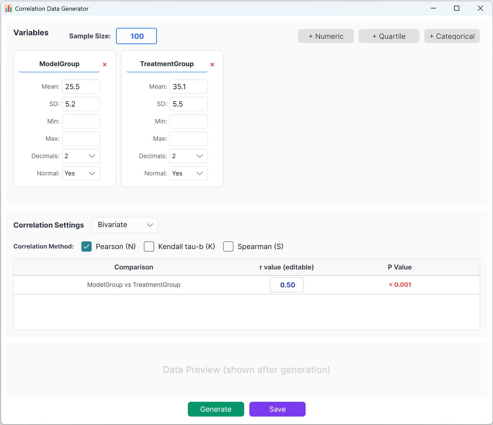
그림 14.1: 상관분석을 위한 사용자 인터페이스 / 작업
14.2 매개변수
시스템은 빠른 참고를 위해 두 개의 변수 세트를 미리 불러옵니다. 연속형(평균/표준편차), 사분위수, 범주형 형식을 지원하며 변수를 쉽게 추가할 수 있습니다. 설정 패널에서 각 지표의 표본 크기, 평균, 표준편차를 지정합니다(최소/최대 제한은 선택 사항).
그룹 간 정확한 목표 상관계수(r)를 지정할 수 있습니다. 생성 버튼을 클릭하여 시뮬레이션을 실행하고 결과 상관행렬을 팝업 창에 표시합니다. 이후 Excel 파일로 내보낼 수 있습니다.
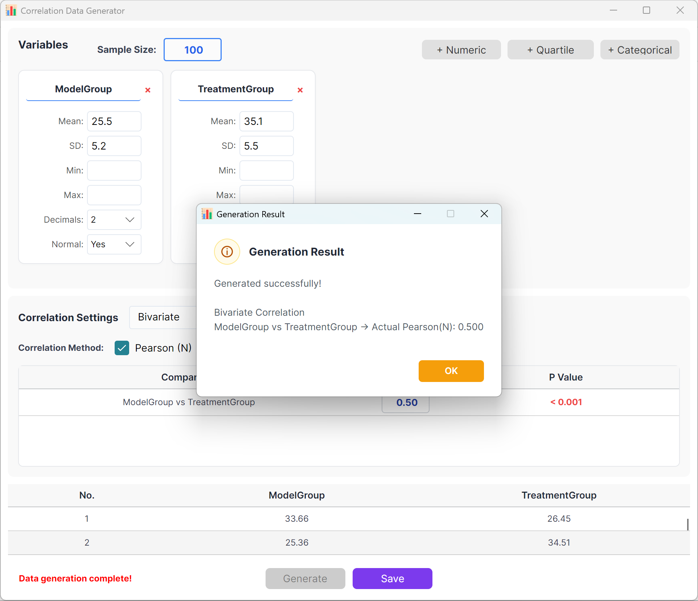
그림 14.2: 상관분석 데이터 표시를 위한 사용자 인터페이스 / 작업
15. ROC 곡선 분석용 데이터 생성
연속형 또는 범주형 검사 변수가 두 상태(예: 양성 진단 vs 음성 진단)를 구분하는 진단 능력을 평가합니다.
15.1 작업 흐름
다음으로 이동합니다: Analyze → ROC Curve.

그림 15.1: ROC 곡선 설정을 위한 사용자 인터페이스 / 작업
비율: 왼쪽 매개변수 패널에서 양성 표본(1)과 음성 표본(0)의 목표 사례 수(예: 양성 100건, 음성 100건)를 입력합니다. 생성 엔진은 이러한 비율을 기반으로 핵심 통계 표본 행렬을 구성합니다.
15.2 변수 유형
클릭 + 연속형 또는 + 범주형 를 왼쪽 아래에서 클릭하여 해당 변수를 만듭니다:
- 연속형 변수: 카드에서 변수명, 최소/최대 경계, 목표 소수 자릿수를 사용자 지정합니다. 분홍색 슬라이더(양성 그룹)와 파란색 슬라이더(음성 그룹)를 끌어 각 그룹의 평균 및 표준편차 분포를 빠르게 조정합니다.
- ⚙ 정밀 조정: 시각적 슬라이더가 필요한 정확한 세밀도에 도달하지 못하면 매개변수 옆의 기어 아이콘(⚙)을 클릭해 정확한 부동소수점 값을 직접 입력하세요.
- AUC 모니터링: 조정 과정 전반에서 카드 오른쪽 위의 AUC = 0.XXX 표시와 중앙 플롯 캔버스가 실시간으로 업데이트되어 곡선을 정확한 목표 절단점에 시각적으로 맞출 수 있습니다.
- 범주형 변수: 양성 및 음성 코호트의 정확한 비율 또는 건수를 정의하기만 하면 됩니다. ROC 곡선과 AUC 값의 변화를 즉시 모니터링할 수 있습니다.

그림 15.2: ROC 곡선 플롯 표시를 위한 사용자 인터페이스 / 작업
16. 설정한 매개변수 저장 및 내보내기
반복적인 모델링 작업을 간소화하고 수동 설정 오류를 방지하기 위해 애플리케이션은 강력한 내장 설정 상태 보존 기능을 제공합니다.
16.1 저장/복원
- 설정 내보내기: 다음으로 이동합니다: File → Export Configuration 를 선택하여 설정한 모든 매개변수, 변수 정의, 그룹 구조, 목표를 컴퓨터의 로컬 `.json` 설정 파일로 저장합니다.
- 설정 가져오기: 향후 세션에서 설정을 복원하려면 다음으로 이동하세요: File → Import Configuration 그리고 이전에 저장한 설정 파일을 선택합니다. 작업 영역은 즉시 다시 로드되어 모든 변수 카드, 슬라이더, 매개변수 값을 복구합니다.